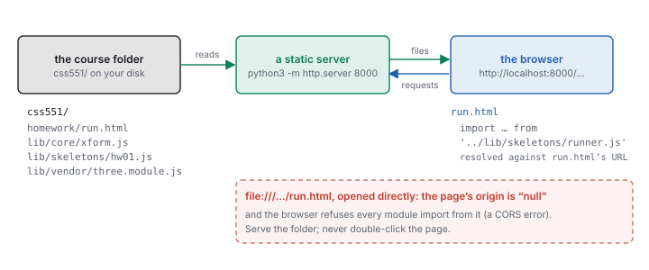
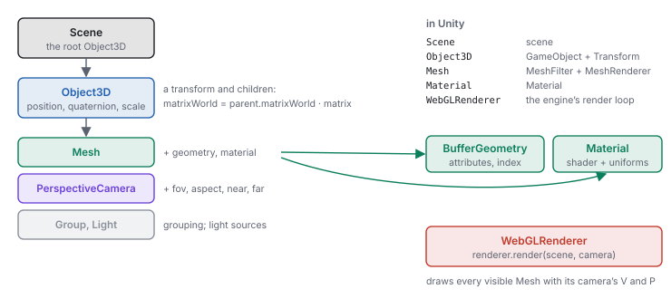
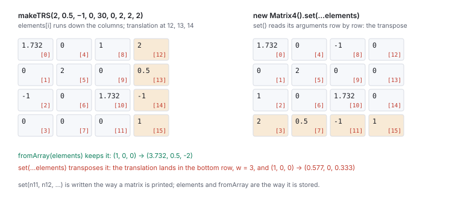

This chapter links to the course’s interactive demos and uses MathJax for its formulas. Read it through the course website (or download the file and open it in a browser); a Canvas inline preview will reach neither the demos nor the math. All chapters.
Matrix4.set), the course’s own library, and how a homework skeleton runs and reports. Read before the first homework (HW1); return to Sections 6 and 7 before HW3 (affine and scene graphs) and to the shader chapter before HW5.
Each homework (HW1 to HW6) can be done in either of two tracks, Unity or WebGL, and HW7 and HW8 in JavaScript or Python. The Unity chapter serves the first track; this chapter serves the second. The WebGL track runs in a browser on the course’s own JavaScript library, the same code behind every demo in this text, drawn with three.js, a widely used library over the browser’s WebGL interface. There is nothing to install beyond a browser and Python. The price is that a browser is a stricter host than an editor: a page must be served, modules must be imported by exact relative paths, and errors appear in a console rather than a window. The chapter covers that ground first, then the four things a graphics course needs from three.js (the transform hierarchy, the frame loop, the matrix type and its storage, and the difference between its conventions and the text’s), then the course library and the homework runner. It is not a three.js tutorial: lights, shadows, post-processing and loaders are left out.
Download the course site (its repository, as the homework pages describe: the folder that holds
index.html, lib/ and homework/; this chapter calls it css551/)
and, in a terminal, start a static web server in it:
cd css551 python3 -m http.server 8000
Then open http://localhost:8000/ for the course hub, or
http://localhost:8000/homework/run.html?hw=hw01 for the first homework. The server does
nothing but hand files to the browser; stop it with Ctrl-C. Any port works, but every page of the course
uses relative paths, so the server must be started in css551/ itself, not in a subfolder,
or the pages will not find the library.

run.html opens it as file:///…/run.html, and the page stays
blank. The browser treats a file page’s origin as null and refuses to load modules from it.
The console says so, and it is worth recognizing the message, because it names the file it refused rather
than the cause:
Access to script at 'file:///…/css551/lib/skeletons/runner.js' from origin 'null' has been blocked by CORS policy: Cross origin requests are only supported for protocol schemes: chrome, chrome-untrusted, data, http, https.The fix is never to change the code; it is to serve the folder.
Every file of the course library is an ES module: it says what it shares with export and what
it needs with import. A page starts the chain with <script type="module">.
// lib/skeletons/hw01.js, the file you edit in HW1
import { dot, cross, normalize, sub } from '../core/xform.js';
export function advance(p, velocity, dt) { /* yours */ }
'./x.js', '../core/xform.js') is resolved against the URL of
the importing file, not the page and not the folder the server runs in. From
lib/skeletons/hw01.js, '../core/xform.js' is lib/core/xform.js. The
extension is required; a missing .js or a wrong case is a 404 on a case-sensitive server.
Each module runs once per page however many times it is imported, and its top-level names are private
unless exported.
The browser caches modules aggressively. After editing a file, reload with the cache bypassed (Shift-reload, or Cmd-Shift-R on a Mac, Ctrl-Shift-R elsewhere), or keep the developer tools open with “Disable cache” checked in the Network tab. The homework runner adds a fresh query string to your file’s URL on every load, so your own file is never stale; the library files can be.
Open them with F12, or Cmd-Option-I on a Mac. Three panels do almost all the work.
console.log output, warnings and every uncaught error with its file and line (click the link to jump there). It is also a live JavaScript prompt in the page’s context: after the homework runner loads, window.__hwResults holds the check rows.debugger; statement in your file does the same from code.xform.js is a wrong import path; a module that never appears was never imported.THREE.Matrix4 logged with console.log(m) shows an object whose
elements array is the sixteen numbers in storage order, down the columns. To see it the way the
text prints a matrix, log its rows:
for (let r = 0; r < 4; r++) console.log([0, 1, 2, 3].map((c) => m.elements[4 * c + r].toFixed(3)));The same line works on the course library’s plain 16-element arrays, since the two share one layout (Section 7).
console.table on a 4-by-4 array of rows is another readable form.
position, quaternion or rotation, scale) and
children. A Mesh is an Object3D that also holds a BufferGeometry (the
arrays of the meshes chapter) and a Material (how to shade
it); a PerspectiveCamera is an Object3D that also holds the projection parameters; lights
and groups are Object3Ds too. A WebGLRenderer owns the canvas, and
renderer.render(scene, camera) draws the tree once from that camera.

The largest difference from Unity is that nothing runs by itself. There is no editor, no Play button and
no script lifecycle: your code creates the scene, adds objects, and calls render when the
picture should change. The course’s demos are built that way, and so is every homework view.
An animation in a browser is a function that asks to be called before the next screen refresh, does one
frame’s work, and asks again. requestAnimationFrame(f) calls f once, with a
timestamp in milliseconds; the loop is the function scheduling itself. It is the
rasterization chapter’s loop, written by hand:
let last = 0;
function frame(t) { // t: milliseconds since the page loaded
const dt = last ? (t - last) / 1000 : 0; // the frame's length in seconds
last = t;
cube.position.x += 3 * dt; // 3 units per second, at any frame rate
renderer.render(scene, camera);
requestAnimationFrame(frame); // ask for the next frame
}
requestAnimationFrame(frame);
cube.position.x += 1 in frame moves one unit per refresh: 60 units a second on a
60 Hz display, 144 on a 144 Hz one. += 3 * dt moves 0.1 per frame at 30 Hz, 0.05 at 60 Hz and
0.0208 at 144 Hz, and 3 units after one second on all three. This is the same arithmetic as Unity’s
Time.deltaTime (the Unity chapter draws it); the
difference is that the browser hands you a timestamp and you compute the step yourself.
THREE.Clock’s getDelta() does the subtraction for you.
There is no FixedUpdate. A simulation that needs a constant step, such as the cloth and fluid of
the animation chapter, runs the accumulator of the
interactive-systems chapter inside frame: add dt to a bank and take fixed steps
while the bank holds one. Two browser behaviors matter. A hidden tab gets no animation frames at all, so the
first dt after returning can be seconds long and should be clamped. And a page that calls
requestAnimationFrame forever keeps the graphics card busy even when nothing changes; the
course’s demos render on demand instead, running the loop only while a key is held and drawing once
per slider change.
position, quaternion and scale are the node’s transform relative
to its parent, the \(L\) of the scene-graph chapter; rotation
is the same rotation as Euler angles in radians, kept in step with quaternion.
matrix is \(L = T\,R\,S\), rebuilt from those fields when matrixAutoUpdate is on
(the default); matrixWorld is \(W = W_{\text{parent}}\,L\). Both are refreshed by
updateMatrixWorld(), which renderer.render calls for the whole scene before drawing.
parent.add(child) makes the link; parent.attach(child) reparents while keeping the
world pose. getWorldPosition(v), localToWorld(v) and worldToLocal(v)
read and apply \(W\).
node -e "import('./lib/vendor/three.module.js').then(T=>{const p=new T.Object3D();p.position.set(2,0,0);p.rotation.y=Math.PI/2;const c=new T.Object3D();c.position.set(1,0,0);p.add(c);const g=new T.Object3D();g.position.set(0,1,0);c.add(g);p.updateMatrixWorld(true);console.log(g.getWorldPosition(new T.Vector3()).toArray().map(v=>+v.toFixed(3)))})"
[ 2, 1, -1 ]
The course library’s matMul(matMul(P, C), G) of the three makeTRS matrices puts
the grandchild at the same \((2, 1, -1)\) (figures/numbers-webgl.json, key chain).
Note the radians: rotation.y = Math.PI / 2, not 90.
rotation.y = 90 is a rotation by 90 radians: 5156.62°, which is 116.62° past
fourteen whole turns. The object turns, to a strange angle, and no error is raised. three.js angles are radians
everywhere (rotation, Euler, Quaternion.setFromAxisAngle);
THREE.MathUtils.degToRad(90) converts. The camera’s fov is the one exception:
it is in degrees.
three.js agrees with the text on more than Unity does: right-handed, \(y\) up, \(+z\) toward the viewer, column vectors, and matrices stored column by column. A picture drawn from the text matches the screen without mirroring. Three conventions still need naming.
| the text | three.js | note |
|---|---|---|
| \(\mathbf{a}\cdot\mathbf{b}\), \(\mathbf{a}\times\mathbf{b}\), \(|\mathbf{a}|\), \(\hat{\mathbf{a}}\) | a.dot(b), new Vector3().crossVectors(a, b), a.length(), a.clone().normalize() | most Vector3 methods change the vector they are called on and return it; clone() first when the original must survive |
| a \(4\times4\) matrix, column-major | Matrix4, m.elements[16] | stored down the columns, exactly as the library’s arrays: translation at 12, 13, 14. m.multiply(n) is \(m\,n\); v.applyMatrix4(m) is \(m\,v\) with the divide by \(w\) |
| Euler angles | Euler(x, y, z, 'XYZ'), radians | the default order 'XYZ' means \(R = R_x R_y R_z\): the \(z\) turn is applied first. The library’s makeTRS uses the same order; Unity’s is different (\(R_y R_x R_z\)) |
| unit quaternion \((x, y, z, w)\) | Quaternion(x, y, z, w) | same order as the library’s quatFromAxisAngle; setFromAxisAngle(axis, rad); q.multiply(r) is \(q\,r\), \(r\) first |
| \(P\) of the viewing chapter | camera.projectionMatrix | the same sixteen numbers as the library’s perspective(fov, aspect, near, far): the largest difference for (45, 1.5, 0.1, 100) is \(4.4\times10^{-16}\). Call camera.updateProjectionMatrix() after changing fov, aspect, near or far |
| \(V\) | camera.matrixWorldInverse | the camera’s world matrix inverted; a camera looks down its own \(-z\), which is what the viewing chapter’s \(w\) axis says |

set. set is the only Matrix4 method that takes its numbers in the order a matrix is printed.Matrix4.set reads rows
m.set(n11, n12, n13, n14, n21, …) takes its sixteen arguments row by row, the way a
matrix is written on paper, and stores them down the columns. Every other way in (elements,
fromArray, toArray, the library’s arrays) is column by column. So
new Matrix4().set(...elements) builds the transpose. For the TRS matrix of the
Unity chapter’s worked example (translation \((2, 0.5, -1)\),
\(30^\circ\) about \(y\), scale 2):
node -e "Promise.all([import('./lib/vendor/three.module.js'),import('./lib/core/xform.js')]).then(([T,X])=>{const m=X.makeTRS(2,0.5,-1,0,30,0,2,2,2);const good=new T.Matrix4().fromArray(m),bad=new T.Matrix4().set(...m);const p=()=>new T.Vector3(1,0,0);console.log(p().applyMatrix4(good).toArray().map(v=>+v.toFixed(3)));console.log(p().applyMatrix4(bad).toArray().map(v=>+v.toFixed(3)))})"
[ 3.732, 0.5, -2 ]
[ 0.577, 0, 0.333 ]
The transpose has the translation in its bottom row, so \(w = 3\) after the multiply and
applyMatrix4 divides by it: the point lands at \((0.577, 0, 0.333)\) instead of
\((3.732, 0.5, -2)\). A check that compares sixteen entries shows the transpose at once; a picture only looks
“a little off”. Use fromArray for a stored matrix and set only when typing
one in by rows.
Geometry. A BufferGeometry holds named attributes, each a typed array cut into
fixed-size items: position (3 numbers per vertex), normal (3), uv (2),
and an optional index (3 per triangle, counter-clockwise seen from the front). It is the vertex and index
arrays of the meshes chapter, laid out for the graphics card:
const g = new THREE.BufferGeometry();
g.setAttribute('position', new THREE.BufferAttribute(new Float32Array(positions), 3));
g.setAttribute('normal', new THREE.BufferAttribute(new Float32Array(normals), 3));
g.setIndex(indices); // a plain array of integers works
// after editing an attribute's array in place:
g.attributes.position.needsUpdate = true;
The array is uploaded to the graphics card once; editing it in place changes nothing on screen until
needsUpdate is set. computeVertexNormals() computes the averaged normals the meshes
chapter derives by hand, and the homework asks you to compute them yourself (Section 11).
Material. MeshBasicMaterial draws a flat colour, MeshStandardMaterial
lights with three.js’s physically based model, and ShaderMaterial runs shaders you write,
which is how the homework’s lit sphere works; the shader chapter covers
it. A material’s side chooses which faces are drawn (FrontSide, the default, or
DoubleSide for a quad seen from both sides).
Texture and colour. A Texture wraps an image or a canvas; set
texture.colorSpace = THREE.SRGBColorSpace for a photograph or painted image so its colours are
converted to linear light before shading, and texture.needsUpdate = true after drawing into its
canvas. three.js manages colour for you: new THREE.Color(0x808080) stores the linear value 0.2159,
not 0.5, and the renderer converts back to sRGB on output (its outputColorSpace is sRGB by
default). The colour chapter explains why shading must happen in linear light.
Camera. new THREE.PerspectiveCamera(fovYDeg, aspect, near, far) holds the
parameters of the viewing chapter; position it like any Object3D and
aim it with camera.lookAt(x, y, z), which turns its \(-z\) toward the point. When the canvas
changes size, set camera.aspect, call updateProjectionMatrix(), and resize the
renderer with renderer.setSize(w, h).
The homework does not start from an empty page. It runs inside the course’s demo library, the code in
lib/ behind every demo in this text. Four parts matter for the WebGL track.
| module | what it gives you |
|---|---|
lib/core/xform.js | the hand-built math core, no three.js: sub, dot, cross, normalize on 3-arrays; makeTRS(tx, ty, tz, rx, ry, rz, sx, sy, sz) (degrees, order XYZ); axisAngleMatrix, quatFromAxisAngle (returns \([x, y, z, w]\)); matMul(a, b); invertTRS (for translate-rotate-scale matrices only); applyMat4(m, p) (returns \([x, y, z, w]\), no divide) and perspectiveDivide; lookAtBasis(eye, at, up) (returns \(u, v, w, V\)); perspective; uvMat3. Every matrix is a plain 16-element array in column-major order |
lib/core/scene-shell.js | makeScene(container): a scene, a PerspectiveCamera at \((3, 3, 6)\) looking at the origin, a renderer, a grid and axes, ready to add objects to |
lib/core/demo-shell.js, cockpit.js | the page frame every demo shares: the scene area, a help panel (the ? button), and the control rail with SliderRow, ButtonRow and ValueTable readouts |
lib/core/orbit-camera.js | the navigation of every 3D demo and homework view: drag to turn the scene, wheel to zoom, W, A, S, D to fly, the up and down arrows (or Space and Ctrl) to rise and sink, Q and E to roll, H for the home view, and Esc to give the keys back to a slide deck |
makeTRS(2, 0.5, -1, 0, 30, 0, 2, 2, 2) returns the sixteen numbers
\((1.732, 0, -1, 0,\; 0, 2, 0, 0,\; 1, 0, 1.732, 0,\; 2, 0.5, -1, 1)\), down the columns; a
Matrix4 composed from the same position, rotation and scale has the same elements.
A library matrix becomes a three.js one with new THREE.Matrix4().fromArray(m), and back with
m4.toArray(), with no reordering in either direction.
Each homework has one file to edit, lib/skeletons/hwNN.js, whose functions are stubs marked
// TODO, and one page that runs it, homework/run.html?hw=hwNN. The page imports
your file, runs the homework’s checks on your functions with the published inputs, prints a table under
the scene, and draws the scene from your functions, so a wrong function shows twice: as a failed row and as a
wrong picture.
css551/ and open http://localhost:8000/homework/run.html?hw=hw01.The table reports the published inputs only. Grading runs the same checks on a second, hidden set of inputs, so a function that returns the expected numbers without computing them scores on the first and not on the second. The homework pages list every check and its tolerance.
| check | pts | yours | expected | |
|---|---|---|---|---|
| ✗ | advance: position after 1 s at 60 frames per second | 10 | (0, 0, 0) | (3, 0, 0) |
| ✗ | advance: position after 1 s at 20 frames per second | 10 | (0, 0, 0) | (3, 0, 0) |
| ✗ | trsMatrix(t, 30, 2): the 16 entries, column-major | 25 | (1, 0, 0, 0, 0, 1, 0, 0, 0, 0, 1, 0, 0, 0, 0, 1) | (1.7321, 0, -1, 0, 0, 2, 0, 0, 1, 0, 1.7321, 0, 2, 0.5, -1, 1) |
| ✗ | trsMatrix applied to the point (1, 0, 0) | 10 | (1, 0, 0) | (3.7321, 0.5, -2) |
Matrix4.set trap of Section 7. A vector of the right direction and the wrong length is a missing
normalize or a missing \(dt\). A result that is right at 60 frames per second and wrong at 20 is a step
that ignores \(dt\).
The helpers each homework forbids, in both tracks, are listed in one table, in
the Unity chapter’s Section 11, whose third column is the three.js
list; this chapter does not repeat it, so there is one authority. For the WebGL track the allowed primitives
are the library’s sub, dot, cross, normalize
(and, where a homework says so, matMul and applyMat4), component access, arithmetic
and Math. The head of each skeleton file names its own allowed and off-limits list, and each
homework page is the authority for that homework.
css551/ and in the browser.
homework/run.html by double-clicking it, then open the
console. Expected: the CORS message of Section 1 naming runner.js, followed by
Failed to load resource: net::ERR_FAILED. Start the server and open
http://localhost:8000/homework/run.html?hw=hw01 instead; the checks table appears with
0 / 100 on the published inputs.
[ 2, 1, -1 ];
then change Math.PI/2 to 90 and run it again. The grandchild is no longer at
\((2, 1, -1)\), and nothing complains.
[ 3.732, 0.5, -2 ] and [ 0.577, 0, 0.333 ]. Then print
new T.Matrix4().set(...m).transpose().elements and compare it with m: they are
equal.
node -e "Promise.all([import('./lib/vendor/three.module.js'),import('./lib/core/xform.js')]).then(([T,X])=>{const c=new T.PerspectiveCamera(45,1.5,0.1,100);const a=c.projectionMatrix.elements,b=X.perspective(45,1.5,0.1,100);console.log(Math.max(...a.map((v,i)=>Math.abs(v-b[i]))))})"
4.440892098500626e-16
The library’s \(P\) and three.js’s agree to the last bit of a double: the viewing chapter’s
matrix is the one the renderer uses.
lib/skeletons/hw03.js contains import { matMul } from 'core/xform.js';. What does the browser report, and what is the fix?
./ or ../ is not a relative path; the browser refuses it (“Failed to resolve module specifier”). From lib/skeletons/, .. is lib/, so the import is '../core/xform.js'.
+= 2 * dt. On a 90 Hz display, how far does it move per frame, and what goes wrong if the tab is hidden for 5 seconds and dt is not clamped?
dt to, say, 0.1 s.
elements[4], elements[5], elements[6], and what are they geometrically?
trsMatrix for HW1 returns (1.7321, 0, 1, 2, 0, 2, 0, 0.5, -1, 0, 1.7321, -1, 0, 0, 0, 1). What did they do?
Matrix4.set habit applied to a plain array.
new THREE.Vector3(1, 0, 0).applyEuler(new THREE.Euler(Math.PI / 6, 0, Math.PI / 2)): where does the vector go, and where would it go in the order 'ZYX'?
'XYZ' the \(z\) turn comes first: \((1, 0, 0) \to (0, 1, 0)\), then \(30^\circ\) about \(x\) gives \((0, 0.866, 0.5)\). In 'ZYX' the \(x\) turn comes first and leaves \((1, 0, 0)\) alone, then the \(z\) turn gives \((0, 1, 0)\) (numbers-webgl.json, key euler).
const d = target.position.sub(eye.position); computes a direction. What else just happened?
sub changes the vector it is called on, so the target has moved to the difference. Write target.position.clone().sub(eye.position), or new THREE.Vector3().subVectors(target.position, eye.position).
Matrix4.lookAt and the library’s lookAtBasis. With the allowed primitives, write the three lines that give the camera’s \(u\), \(v\), \(w\), and say what to check them against.
const w = normalize(sub(eye, at)); const u = normalize(cross(up, w)); const v = cross(w, u);, the basis of the viewing chapter. Check against lookAtBasis(eye, at, up) or against a camera placed at eye with camera.lookAt(at): its world matrix’s first three columns are \(u\), \(v\), \(w\).
new THREE.Color(0x808080), and a shader you wrote outputs it unchanged without three.js’s output conversion. Is the result lighter or darker than the 50% grey the hex code says, and why?
colorspace_fragment) restores 128.
camera.projectionMatrix.elements for new THREE.PerspectiveCamera(90, 1, 1, 3) and identify the four nonzero entries of its first three columns by their formulas.
1 0 0 0 0 1 0 0 0 0 -2 -1 0 0 -3 0. The same as the library’s perspective(90, 1, 1, 3).